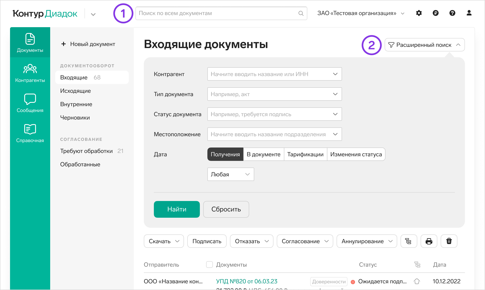
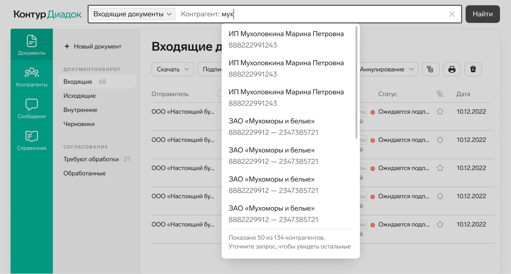
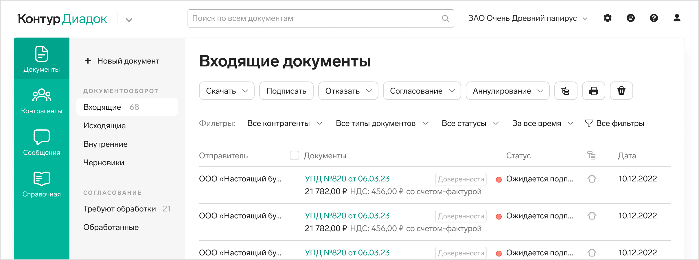
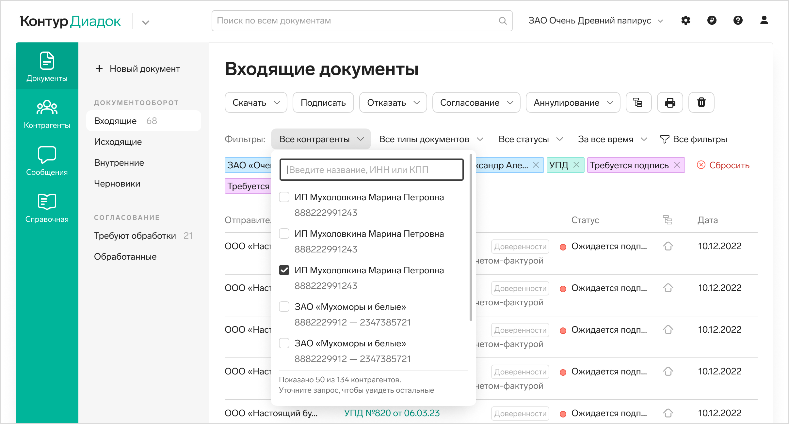
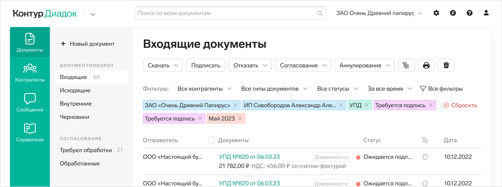
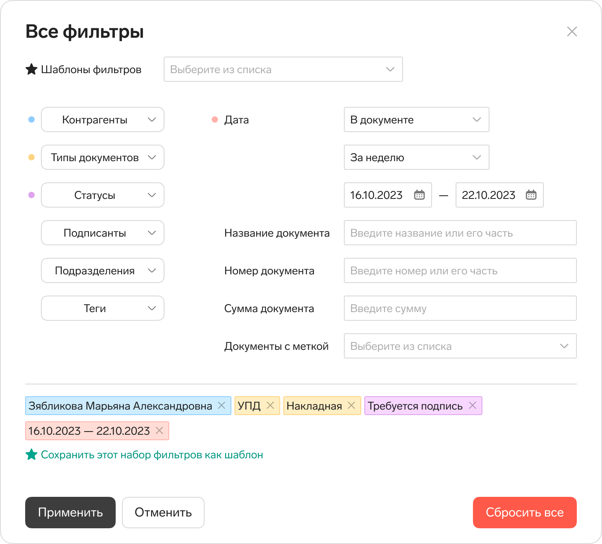
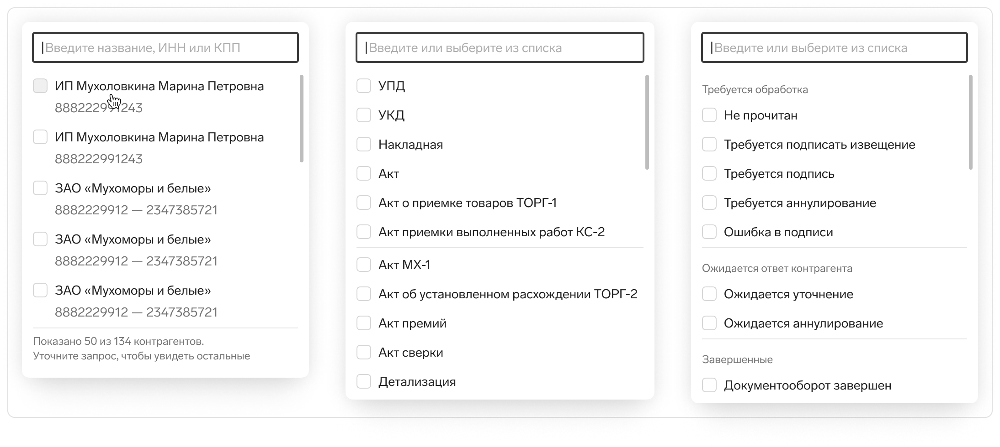
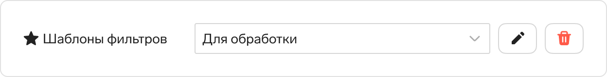
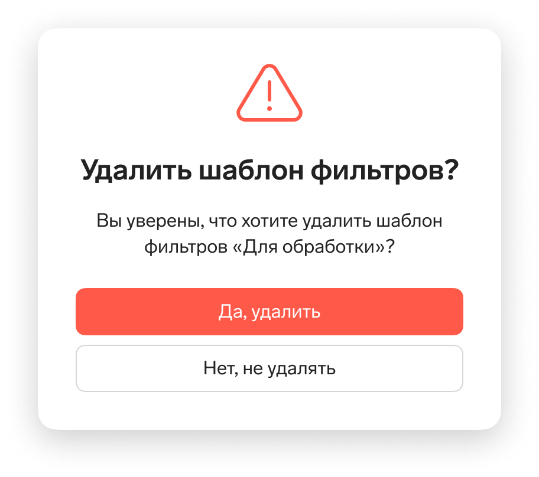
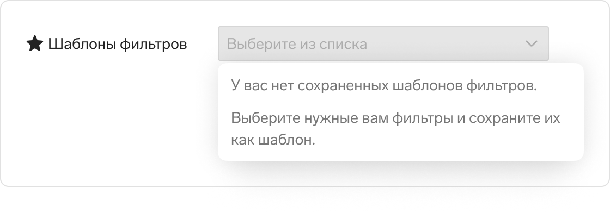

Прошлое решение состоит из полнотекстового поиска и расширенных фильтров. У пользователей есть трудности с этим решением:
Кроме того, нельзя сохранить часто используемый шаблон поиска. Пользователи это не просят напрямую, но если смотреть на их сценарии, им это очень нужно.
Кликнули в поле поиска.
Само поле работает как автокомплит по этому типу поля:
Выбрали контрагента из списка.
Выбрали все нужные фильтры и нажали кнопку «Найти».
Если у пользователя есть сохраненные шаблоны поиска, то в раскрывающемся списке с типами фильтров первой строкой будет «Шаблон поиска».
Эта концепция оказалась сложной в разработке. Поэтому я спроектировала вторую.
В этой концепции строка с фильтрами находится над списком документов. В строке выводим 4 основных фильтра, по которым чаще всего фильтруют пользователи, остальные прячем за ссылкой Все фильтры.
По клику на одну из ссылок для быстрой фильтрации раскрывается список с набором значений, по которому можно поискать нужное — поле поиска над строками с чекбоксами.
После выбора значения строкой ниже добавляется токен с выбранным значением. Цвет токена зависит от типа фильтра. Токен удаляется по крестику и фильтрация сбрасывается. Справа от токенов есть кнопка сброса всех фильтров.
По кнопке «Все фильтры» открывается лайтбокс со всеми возможными фильтрами.
Часть из фильтров — это кнопки-списки, они в первом столбце. Как и на списке документов, по клику на эти кнопки выпадают списки со значениями с возможностью множественного выбора и поиска по ним. Вот некоторые из них:
В правой части лайтбокса во второй колонке обычные поля ввода и раскрывающиеся списки с небольшим количеством значений.
Когда мы выбираем значение в каком-то из полей, выбранное значение выводится в виде токена в нижней части лайтбокса. Там можно увидеть, какие фильтры уже выбраны и будут применены после нажатия на кнопку «Применить».
Поля, в которых выбрано хотя бы одно значение дополнительно отмечено цветным кружочком — его цвет совпадает с цветом токена этого фильтра. Так пользователю проще находить поля и кнопки, в которых выбраны какие-то значения и редактировать их. Не приходится читать название кнопок или полей, это ускоряет работу.
Около выбранных токенов есть ссылка для того, чтобы сохранить этот набор фильтров как шаблон.
Когда пользователь выбирает шаблон, в нижней части лайтбокса с фильтрами выводятся токены — фильтры из этого шаблона, а в раскрывающемся списке выводится название шаблона:
Если после этого выбрать еще какие-то фильтры, они добавятся к уже выбранным фильтрам из шаблона, но в поле «Шаблоны фильтров» уже не будет выводиться название шаблона, потому что новый набор фильтров ему уже не соответствует.
Если выбран какой-то шаблон, рядом появляются кнопки редактирования названия и удаления шаблона.
Шаблон удаляется с подтверждением:
Если нет сохраненных шаблонов, то в раскрывающемся списке пишем подсказку — что нужно сделать, чтобы шаблоны появились.
Обе концепции еще в работе и дальше запланировано юзабилити тестирование обеих версий. Мы будем смотреть, успешно ли пользователи стправляются с заданием найти в списке нужные документы по определенным условиям, обратим внимание, не возникает ли затруднений в каких-то моментах, как быстро пользователи справляются с поиском или фильтрацией списка.
После тестирования мы выберем одно из решений, доработаем ри необходимости и добавим онбординг по новым решениям.